dsh-旋律启动器
DeepSeek Harness 的 Windows 桌面启动器。
装 DSH、管插件、配 API Key，都在窗口里点几下完成，不用先装 Node.js。


单文件便携版，免安装 · 支持 Windows x64 / arm64
$ npx dsh-melody-launcher
已有 Node.js？也可以通过 npm 直接运行
DeepSeek Harness 的 Windows 桌面启动器。
装 DSH、管插件、配 API Key，都在窗口里点几下完成，不用先装 Node.js。
单文件便携版，免安装 · 支持 Windows x64 / arm64
已有 Node.js？也可以通过 npm 直接运行
装环境、改凭据、找插件、调加载顺序，每件事都要开终端手动来。这个启动器把它们放进了图形界面，交互参考了《我的世界》忘却的旋律启动器。
npx @deepseek-ai/dsh
→
下个 exe，点「下载安装 DSH」
.credentials.yaml 填 API Key
→
界面里填，自动写入，权限设成 0600
dsh plugin add
→
启动器里搜 Topic，一键装
package.json 调加载顺序
→
拖列表就行
这些活本来都要敲命令，现在在启动器里点几下就行。
在界面里填入 DeepSeek API Key 就能用，不用手动改凭据文件。OpenAI、Anthropic 兼容的自定义服务也支持，可以存多套配置切换。Key 只写进本机 DSH_HOME 的凭据文件，启动器不回显、不上传。
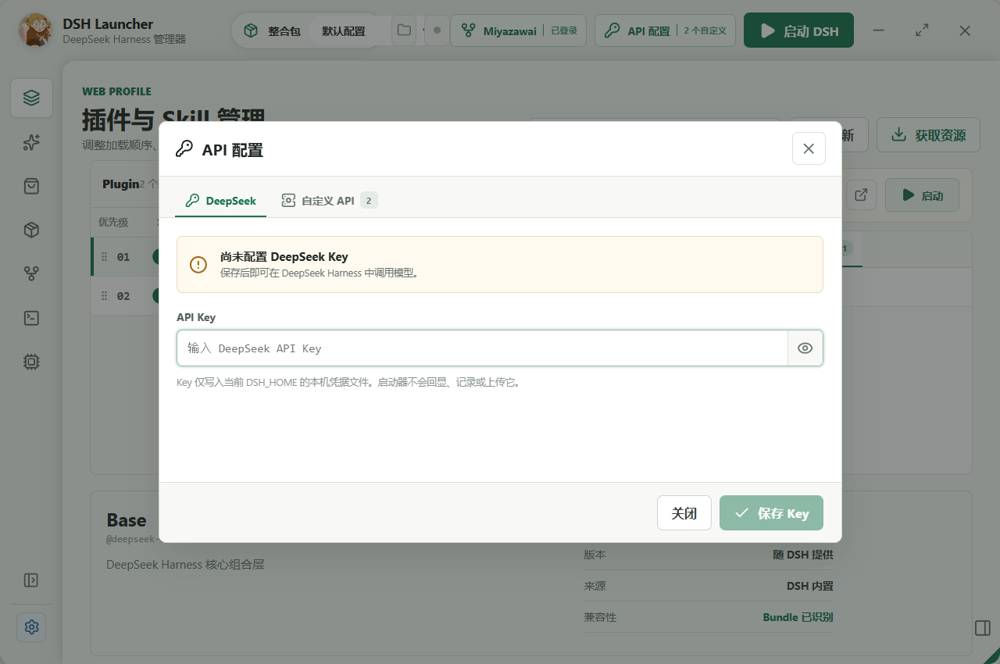
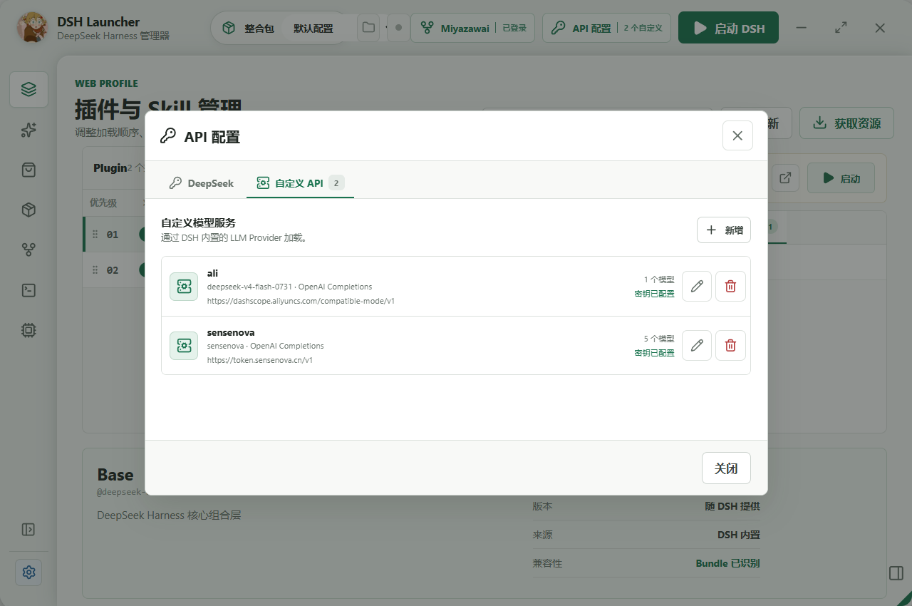
支持 OAuth Device Flow 和 Fine-grained Token 两种登录方式。登录后配置随账号同步，GitHub API 的请求额度也会提高，搜插件不容易被限流。凭据用 Electron safeStorage 加密存在本机。
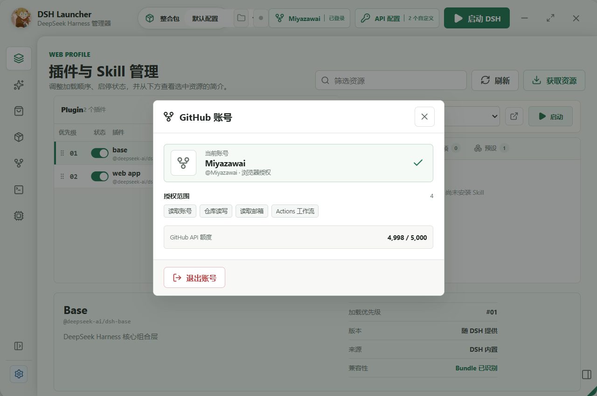
Plugin、Skill、应用加载项和 Agent 预设都在一张面板里，启停、版本、兼容性直接看得到。加载顺序拖动调整，改动写进 DSH 官方 Profile，下次启动生效。
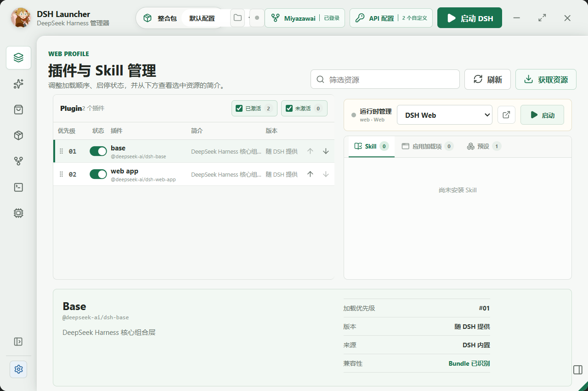
不用自己去 GitHub 翻。启动器里直接搜 dsh-plugin、dsh-skill、dsh-app 三个 Topic，看中了一键安装，进度按阶段显示，全程不用开浏览器。
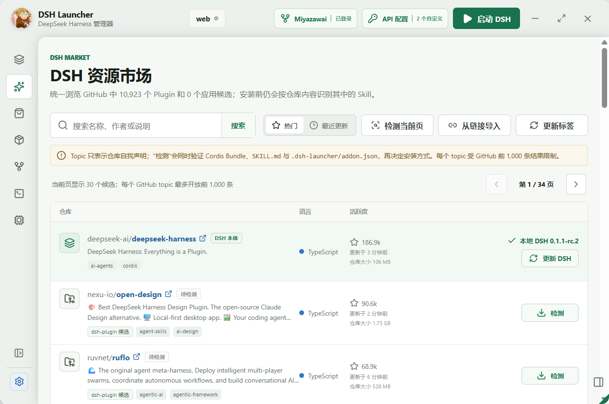
收录了社区里质量比较好的插件和 Skill，类型按仓库真实内容标记。一个仓库里有多种组件时会列清楚，装哪个自己选。
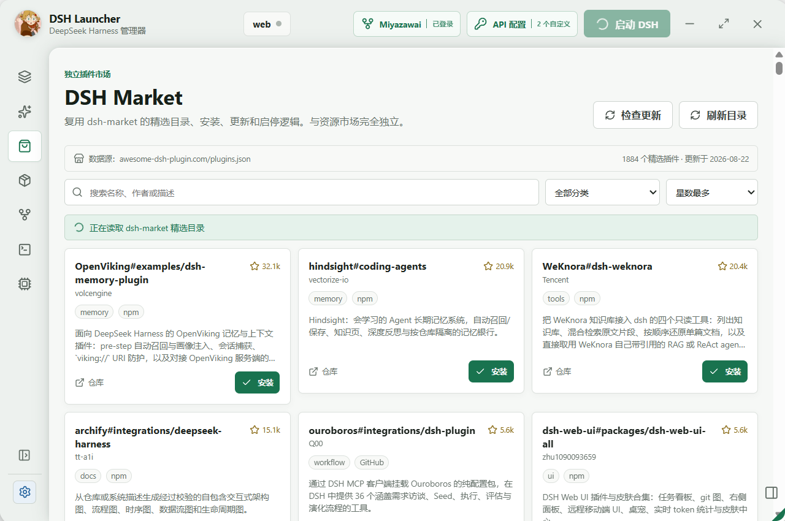
可以把当前装好的插件、Skill 和配置打成一个整合包（Modpack），导出给别人，或者换台机器一键导入还原。玩法参考《我的世界》整合包。
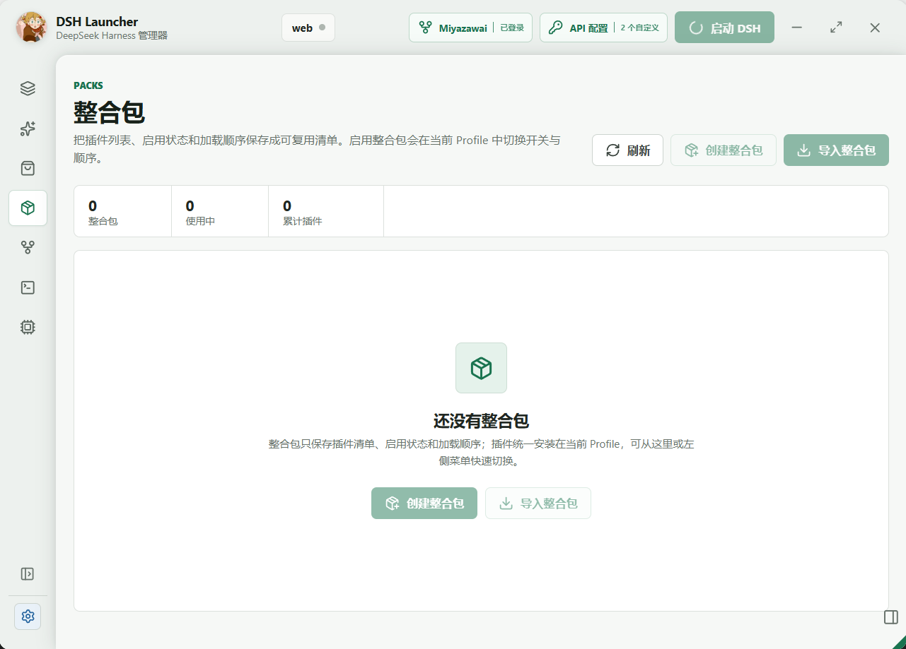
登录 GitHub 后能直接在启动器里看项目的最近提交，跟进进度不用再去翻仓库页面。
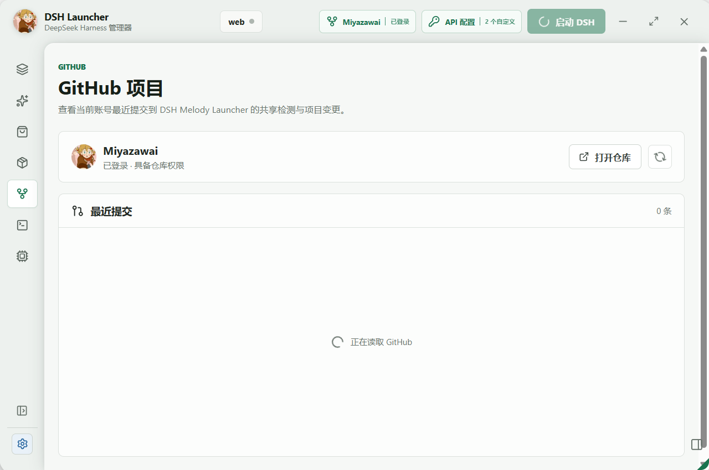
DSH 本体和 Node.js 运行时分开管理，可以并存多个版本，随时切换。升级出问题就切回旧版，环境不会乱。
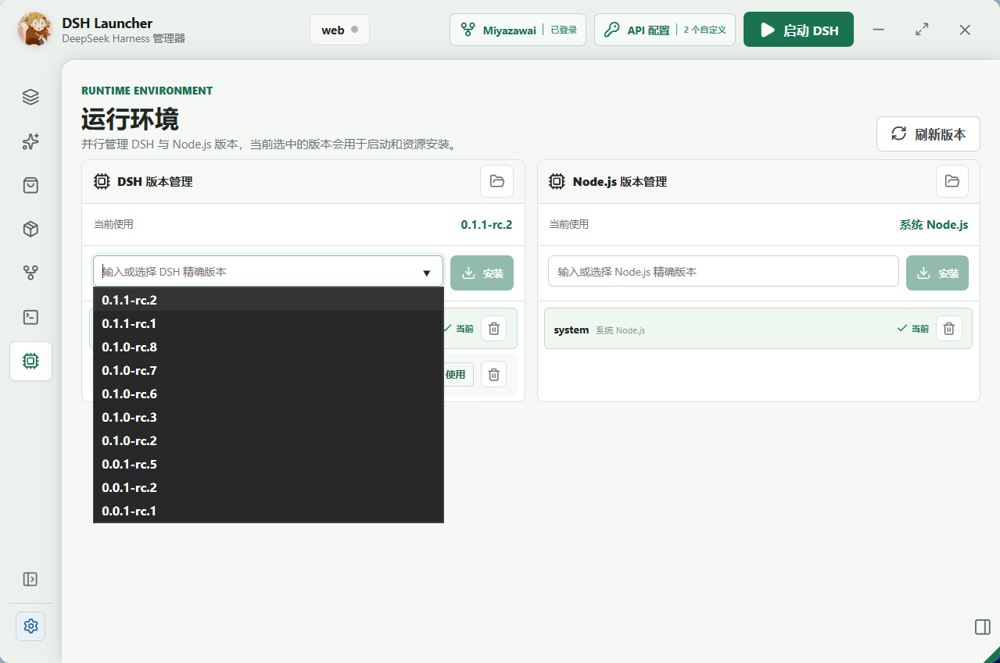
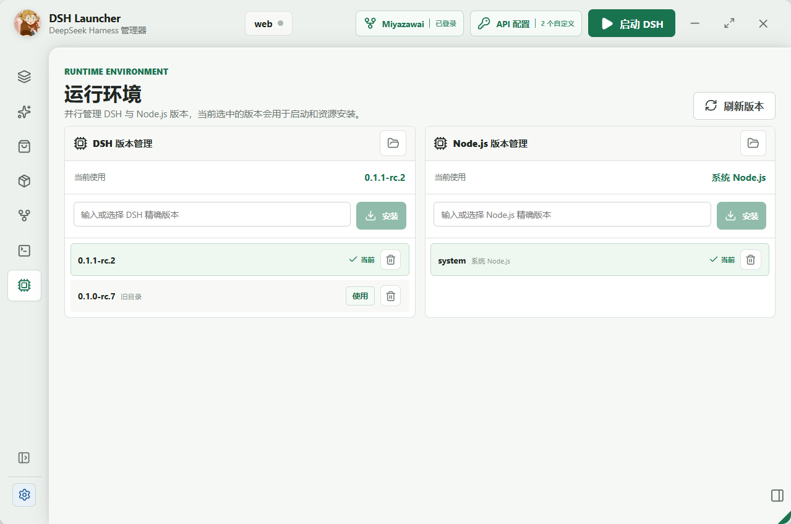
报错或兼容问题可以问内置的 DSH Copilot。它能读取当前 DSH 环境，分析原因并给出修复建议。
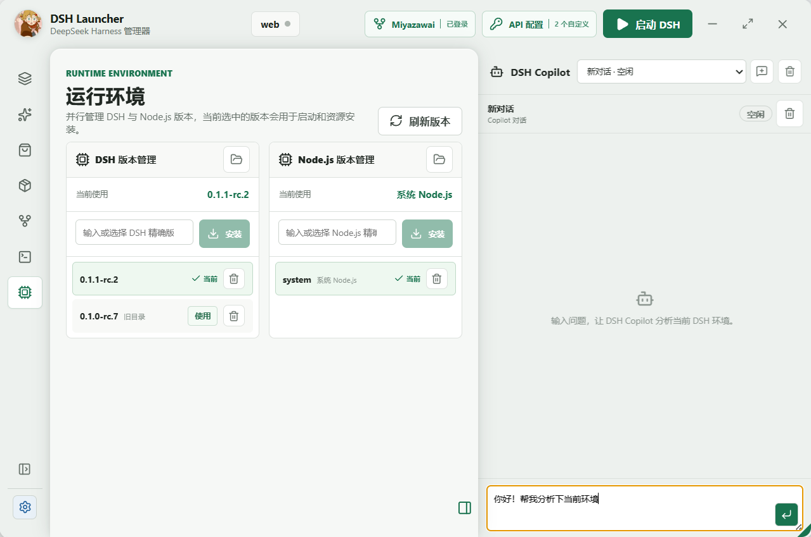
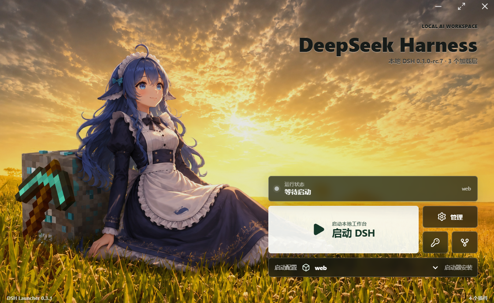
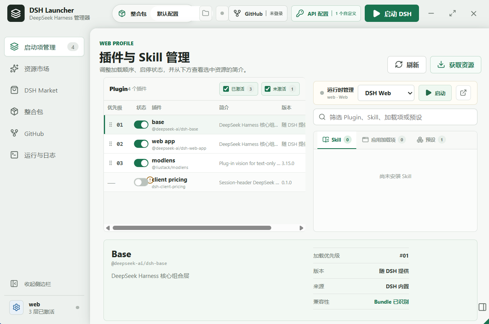
从 Releases 下载最新的便携版 exe，免安装。
打开启动器，点「下载安装 DSH」，无需预装任何环境。
在启动页填入 DeepSeek API Key，自动写入官方凭据文件。
（可选）在资源市场搜索并一键安装 Plugin 或 Skill。
点击「启动 DSH」，服务就绪后自动打开 Harness 网页。
便携版未使用商业代码签名证书，SmartScreen 会拦截未知发布者的程序。确认文件来自官方 Releases 页面后，点击「更多信息 → 仍要运行」即可。
不会。启动器会在运行目录、启动配置、PATH、%APPDATA%\npm 和系统 Node.js 目录中检测已有安装，检测到就直接使用。
正常。停用只是把插件移出 Profile 的有序加载列表，本地依赖保留，方便随时重新启用。只有执行「卸载」才会真正移除文件。
目前只提供 Windows 便携版（x64 / arm64）。源码在其他平台可以运行开发服务器，但 Node.js 便携运行时的自动准备仅实现了 Windows 分支。
插件搜索使用 GitHub 匿名 API，每小时有速率限制。登录 GitHub 账号可提高额度，或等待一段时间后重试。